오늘 할 것
걸어가는 사람 뒤에서 글자가 드러나는 자막부터, 영상 두 개를 겹치고 마스크(보일 부분만 오려 내는 창문)와 키프레임(시간마다 값을 기억해 두는 점)으로 움직이는 효과를 만들고, 창을 펼쳐 다음 장면으로 넘기는 것까지 완성합니다.
1학습 목표 설명
- 영상 두 개를 위아래로 겹치면 위 영상이 아래를 가린다는 원리를 설명할 수 있다.
- 복합 클립과 분할 마스크·키프레임으로 걸어가는 사람 뒤에서 글자가 드러나는 자막을 만들 수 있다.
- 마스크로 위 영상의 일부만 보이게 하고, 창 안에만 효과(흑백·반짝이 등)를 넣을 수 있다.
- 마스크에 키프레임을 찍어 손가락을 따라 움직이는 창을 만들고, 마지막에 창을 펼쳐 다음 장면으로 넘길 수 있다.
2오늘의 흐름 설명
3자료 받기 실행
걷는 사람 영상 (STEP 2) — 하나만 골라 받으세요. 가로 16:9가 기본입니다.
세로(9:16) 영상은 펙셀스 세로 검색에서 골라요: 걷는 사람·벽 (세로) · 옆모습으로 걷기 (세로) · 거리 걷는 사람 (세로). 고를 때 조건 3가지: 카메라 고정 · 옆모습 · 한 방향으로 끝까지.
손가락 창 · 마무리 실습 자료
영상은 크기가 커서 「바이러스 검사를 할 수 없습니다」 창이 뜰 수 있는데, 무시하고 다운로드를 누르면 됩니다. 파일은 다운로드 폴더에 저장되고, 캡컷 가져오기에서 다운로드 폴더를 열면 바로 보입니다. 구글 로그인 없이 받을 수 있습니다.
창 안에 넣을 영상은 뚜비를 써도 되고, 내가 전에 만든 영상(AI 영상·휴대폰 영상)을 써도 됩니다.
4표시 읽는 법 설명
- 막힐 때 상자: 자주 생기는 문제와 해결
- 한 걸음 더 상자: 다 하신 분을 위한 응용
5보석(💎) 기능 쓰는 법 설명
보석 표시가 붙은 기능은 프로 기능입니다.
- 프로 구독이 있으면 그대로 다 쓰고 내보내면 됩니다.
- 프로 구독이 없어도 편집 화면에서 넣어 보고 미리보기로 확인하는 것까지는 됩니다. 막히는 건 내보내기뿐입니다.
- 무료 계정으로 완성본을 저장하려면 내보내기 전에 💎 효과를 지우거나 무료 기능으로 바꾸세요. (예: 펜 마스크 → 직사각형, 💎 효과 → 보석 없는 효과)
겹치기 · 마스크 · 키프레임의 원리
오늘 만드는 손가락 창, 창 안 효과, 장면 펼치기는 모두 세 가지 재료의 조합입니다. 이 원리를 알면 SNS에서 본 유행 효과를 스스로 따라 만들 수 있습니다.
1세 가지 재료 설명
투명 필름 두 장을 겹치고(①), 위 필름에 창문을 오린 뒤(②), 그 창문의 위치와 크기를 시간마다 적어 두면(③) 창문이 움직입니다.
2겹치기: 트랙 순서가 곧 앞뒤 순서 설명
같은 영상을 복사해 위 트랙에 올리면 화면은 하나도 안 바뀐 것처럼 보입니다. 위 영상이 아래를 완전히 덮고 있기 때문입니다. 여기에 마스크를 넣는 순간 아래가 드러나기 시작합니다.
3마스크: 위 영상에 창문 내기 설명
마스크는 위 클립에 넣습니다. 창 안은 위 영상, 창 밖은 아래 영상이 보입니다. 반전을 누르면 반대가 됩니다.
4핵심: 같은 영상 두 개 + 위에만 효과 = 창 안에만 효과 설명
| 어디에 효과를? | 결과 | 오늘 어디서 |
|---|---|---|
| 위 클립에만 | 창 안만 효과 (반짝이 창, 흑백 창) | STEP 3 실습 A |
| 아래 클립에만 | 창 밖이 효과, 창 안은 원래 색 | STEP 3 실습 B (창 밖 흑백) |
| 위 클립을 다른 영상으로 | 창 안에 전혀 다른 장면 | STEP 3 실습 B |
5마스크 종류 설명
마스크 목록의 이름과 순서는 캡컷 버전에 따라 조금 다를 수 있습니다. 펜 마스크에는 💎 표시가 있습니다.
6키프레임: 처음과 끝만 찍으면 사이는 자동 설명
- 재생 헤드를 둔 곳에서 값 옆 ◇를 누르면 → ◆ 첫 점
- 재생 헤드를 옮기고 값을 바꾸기만 하면 점이 저절로 하나 더
7이 원리로 만드는 유행 효과 설명
| 효과 | 겹치기 | 마스크 | 키프레임 |
|---|---|---|---|
| 손가락 창 (STEP 3) | 손 영상 + 창 안 영상 | 직사각형 / 펜 💎 | 창 위치·크기를 손가락 따라 |
| 창 안만 반짝이·흑백 (오늘) | 같은 영상 두 개 | 원형·직사각형·펜 💎 | 창이 화면을 돌아다님 |
| 창 펼쳐 장면 전환 (오늘) | 손 영상 + 다음 장면 | 직사각형 | 창을 화면보다 크게 |
| 사람 뒤에서 글자 드러나기 (STEP 2) | 글자 + 영상 복사본 | 분할 | 분할선이 사람 등을 따라감 |
| 흑백 속 일부만 컬러 | 같은 영상 두 개 | 원형 · 반전 | 컬러 부분이 따라다님 |
| 사선으로 닦아 내는 전환 | 앞 장면 + 뒤 장면 | 분할(기울임) + 페더 | 분할선이 화면을 가로지름 |
사람 뒤에서 나타나는 자막
사람이 걸어 지나간 자리부터 글자가 드러납니다. STEP 1의 세 재료 중 분할 마스크(화면을 직선 하나로 나누는 마스크)와 키프레임을 씁니다.
1완성 모습과 원리 (3겹) 설명
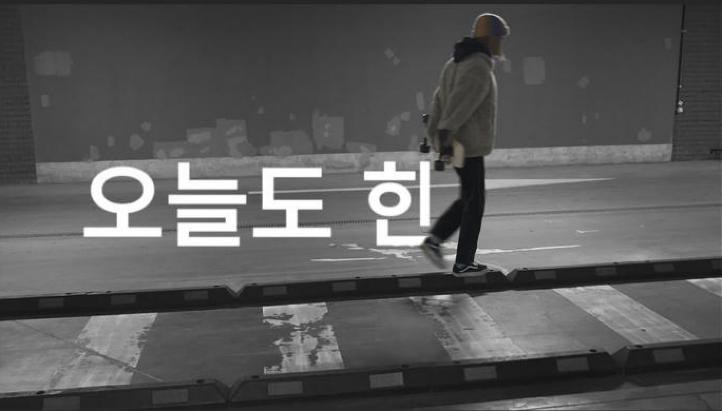

2플로우로 걷는 영상 만들기 (시작·끝 사진) 실행 선택
STEP 0 「자료 받기」의 영상을 쓰면 이 카드는 건너뛰어도 됩니다. 새로 만들 때는 시작 사진 → 끝 사진 → 영상 순서예요. 프롬프트는 가로 16:9 기준입니다. 세로로 만들려면 프롬프트의 Wide 16:9를 Vertical 9:16으로 바꾸고 설정도 9:16으로 고르세요.
① 시작 사진 (이미지 · 16:9 · Nano Banana 2.1)
👨 남자 · 카페 앞
👩 여자 · 꽃집 앞
장소를 바꾸려면 small cafe with a warm wooden storefront 부분만 바꿔요. 예: bakery(빵집), bookstore(서점). 이미지는 크레딧이 들지 않아요.
② 끝 사진: 시작 사진을 [+]로 첨부
- 아래 입력창 왼쪽 + → 목록에서 시작 사진 누르기 → 「프롬프트에 추가」
- 입력창 위에 사진이 붙었는지 보고 → 아래 프롬프트 붙여 넣기 → 만들기
👨 남자용
👩 여자용
③ 영상 설정
- 동영상 → 프레임 → 16:9
- 모델 Omni 1.2 Flash · 연습은 360p, 올릴 것은 720p
- 길이 10초 (시작+끝 사진을 쓰면 10초까지만 돼요) · x1 → 크레딧 숫자 확인
④ 시작·종료 칸에 사진 넣기
- 시작 칸 → 시작 사진 → 「프롬프트에 추가」 / 종료 칸 → 끝 사진 → 「프롬프트에 추가」
- 시작 = 왼쪽 끝 사람, 종료 = 오른쪽 끝 사람인지 눈으로 확인 (같은 사진이 두 번 들어가는 실수가 잦아요. 칸을 다시 누르면 비워져요.)
⑤ 영상 프롬프트
👨 남자용
👩 여자용
핵심 말: Static locked-off camera(카메라 고정) · steady, constant pace(일정한 걸음) · keeps facing right(계속 오른쪽 보기). 카메라가 움직이면 글자가 배경 위에서 미끄러져 보여요.
⑥ 결과 확인 → 내려받기
카메라가 고정됐는지, 처음부터 끝까지 오른쪽으로 걷는지 확인하고 → 영상 위 다운로드 → 캡컷으로 가져와요.
3따라 하기 ① 영상 두 줄 + 사람 오리기 실행 필수
- 새 프로젝트 → 미디어 → 가져오기 → 걷는 영상 → 타임라인에 끌어다 놓기
- 타임라인 위 도구 모음에서 메인 트랙 자석(자석 모양) 끄기: 클립이 저절로 앞으로 붙지 않게 해요.
- 걷는 영상 선택 → Ctrl+C → Ctrl+V → 위 트랙에 같은 영상이 하나 더 생겨요 (시작점이 같아야 해요). 이게 「영상 두 줄」이에요.
- 위 복사본만 선택 → 오른쪽 동영상 → 배경 제거 → 자동 삭제 체크 → 사람만 남아요. 💎

4따라 하기 ② 글자 넣고 줄 순서 맞추기 실행 필수
- 왼쪽 위 텍스트 → 기본 텍스트 → 문구 입력 (아래 문구 카드에서 복사)
- 글자를 크게, 높이는 사람 몸통 높이에: 머리 위에 있으면 사람 「뒤」로 안 보여요. 세로(9:16)면 짧은 문구를 두 줄로.
- 글자 클립 길이를 영상 길이와 똑같이 맞추기
- 줄 순서 맞추기: 맨 위 = 사람 복사본 · 가운데 = 글자 · 맨 아래 = 원본. 글자 클립을 끌어서 두 영상 사이 트랙에 놓아요.
- 글자 클립 오른쪽 클릭 → 복합 클립(하위 프로젝트) 만들기 (단축키 Alt+G)
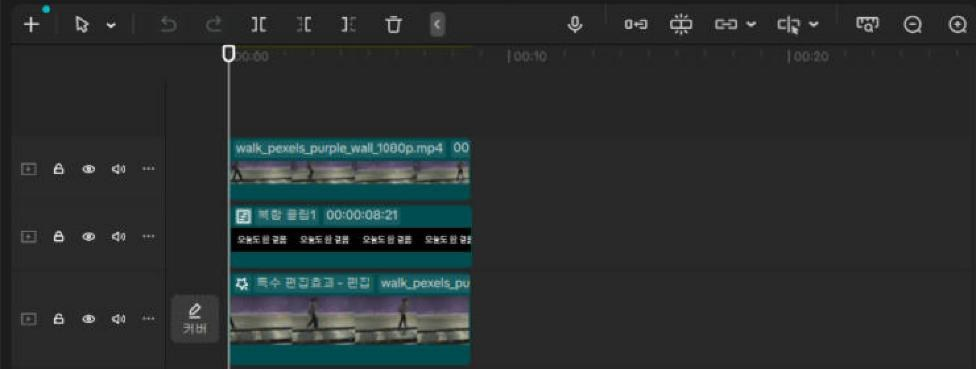
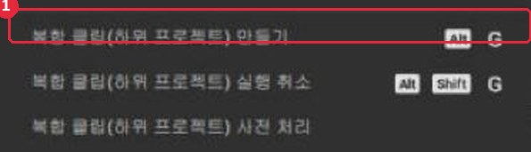
5문구 카드 실행
짧을수록 잘 보여요. 두 줄이 넘으면 사람 몸에 다 안 가려져요.
6따라 하기 ③ 분할 마스크 실행 필수
- 복합 클립 선택 → 오른쪽 패널 동영상 → 마스크 → 분할
- 패널을 아래로 내려 마스크 설정 → 회전에 270 입력 (사람이 왼쪽 → 오른쪽으로 걸을 때)
화면에 세로 흰 선이 보이면 성공. 이 선의 왼쪽에만 글자가 보여요. 셔터 앞 영상처럼 오른쪽에서 왼쪽으로 걸으면 90°.
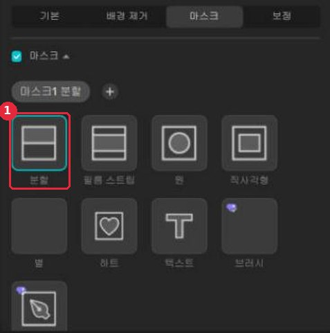

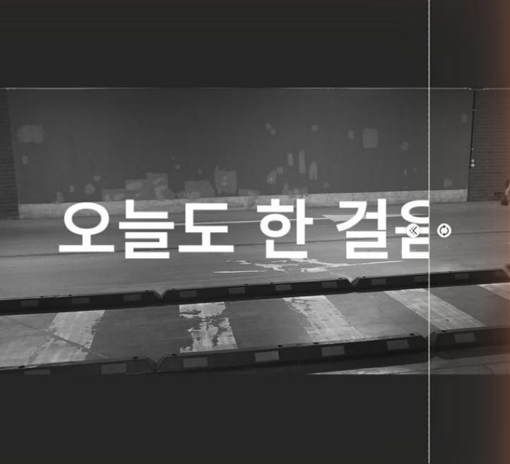
7따라 하기 ④ 키프레임으로 사람 따라가기 실행 필수
- 재생 헤드를 사람이 처음 화면에 들어온 순간으로 옮기기
- 마스크 설정 위치 X 숫자를 바꾸거나 화면의 흰 선을 끌어서, 선을 사람 등 바로 뒤에 두기
- 마스크 설정 줄 오른쪽 ◇를 눌러 키프레임 만들기 (◆로 바뀜)
- 재생 헤드를 1초 뒤로 → 선을 다시 사람 등 뒤로 옮기기 → 숫자만 바뀌어도 키프레임이 저절로 추가돼요.
- 사람이 화면 밖으로 나갈 때까지 1초마다 반복
- 사람이 나간 뒤에는 선을 화면 오른쪽 끝 밖까지 옮기기 → 글자 전체가 보여요.
- 처음부터 재생해 보고, 글자가 사람보다 앞서 나오는 곳에 키프레임 하나 더
- 오른쪽 위 내보내기로 한 편 저장
8한 걸음 더 선택
9막힐 때
| 이럴 때 | 이렇게 |
|---|---|
| 마스크 메뉴가 회색 | 글자 클립을 복합 클립으로 바꿨는지 확인 (Alt+G) |
| 글자가 반대쪽에 보임 | 회전 270° ↔ 90° |
| 글자가 사람보다 먼저 나옴 | 그 시점에 키프레임 추가, 위치 X를 사람 등 뒤로 |
| 글자가 사람 머리 위에 떠 있음 | 글자 높이를 몸통 높이로 내리기 |
| 글자가 사람 앞을 가림 | 줄 순서 확인: 사람 복사본이 맨 위 |
| 사람 복사본에 배경이 남음 | 「자동 삭제」 체크 확인 · 1080p 영상 쓰기 |
| 클립이 앞으로 당겨 붙음 | 메인 트랙 자석 끄기 |
손가락 창 만들기
엄지와 검지로 만든 네모 창이 움직일 때, 그 창 안에만 효과나 다른 영상이 보이게 합니다. 실습 A는 같은 영상 두 개로 창 안에만 효과, 실습 B는 창 안에 다른 영상 + 창 밖 흑백입니다.
1완성 모습과 구조 설명
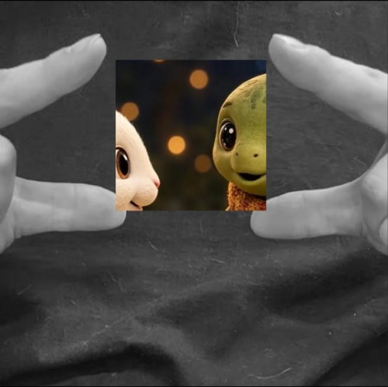
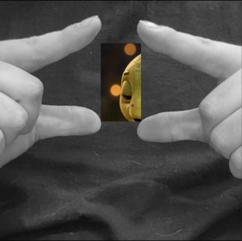

2내 손을 직접 찍는다면 설명 선택
- 휴대폰을 삼각대나 컵에 기대 고정하고 찍기 (화면이 흔들리면 창 맞추기가 훨씬 어려움)
- 배경은 단색 벽이나 어두운 천
- 엄지·검지로 네모를 만들고 천천히 키웠다 줄였다, 옮겼다
- 5~6초면 충분합니다
3따라 하기 ① 손 영상 준비 실행 필수
- 강사 손 영상을 아직 안 받았으면 → ⬇ 강사 손 영상 받기
- 새 프로젝트 → 손 영상 가져오기 → 타임라인에 놓기
- 가운데 세부 정보 → 수정하기 → 가로 세로 비율: 강사 손 영상은 1:1, 휴대폰으로 세워 찍었으면 9:16 → 저장
- 강사 손 영상만: 손 영상 클립 선택 → 오른쪽 동영상 → 기본 → 확대에 185 입력 → 사방의 검은 띠가 사라지고 손이 화면에 꽉 참 (직접 찍은 영상은 건너뛰기)
- 재생 헤드 13초에 두고 Q(왼쪽 삭제) → 다시 6초쯤에 두고 W(오른쪽 삭제)
강사 손 영상은 13초부터 손가락 창이 또렷하게 움직입니다. 아래 숫자 표도 이 자리 기준입니다.

4실습 A · 창 안에만 효과 넣기 실행 필수
- 손 영상 클립 선택 → Ctrl+C → Ctrl+V → 복사본을 바로 위 트랙, 같은 시작 자리로 끌어 맞추기
- 위 클립 선택 → 창 안에 넣을 효과 고르기 (아래 표에서 하나)
- 위 클립 선택 → 동영상 → 마스크 → 마스크 추가(+) → 직사각형
- 재생 헤드 0초 → 화면의 네모 틀을 끌어서 손가락 끝 4개의 안쪽에 맞추기 (모서리 점 = 크기, 안쪽 = 위치, 아래 ↻ = 회전)
- 마스크 설정 줄 오른쪽 ◇ 누르기 → 첫 키프레임 ◆
- 재생 헤드 1초 뒤 → 틀을 다시 손가락 끝 안쪽에 맞추기 (키프레임 자동 추가)
- 구간이 끝날 때까지 반복 → 재생해서 어긋난 곳에 하나 더
| 창 안에 넣을 효과 | 하는 법 |
|---|---|
| 흑백 Free | 위 클립 → 조정 → 기본 → 채도 막대 끝까지 왼쪽 (-50) |
| 반짝이 | 위쪽 효과 탭 → 검색 「반짝」 또는 「glitter」 → 마음에 드는 효과를 위 클립 위로 끌어다 놓기 |
| 색 바꾸기 | 위 클립 → 필터 하나 적용, 또는 조정에서 색온도·색조 |
| 흐림 | 위쪽 효과 탭 → 검색 「흐림」 또는 「blur」 → 위 클립 위로 끌기 |
강사 손 영상 숫자 (1:1, 13초에서 자른 뒤) — 막힐 때 넣어 보는 출발점
| 시간 | 위치 X | 위치 Y | 크기 가로 | 크기 세로 |
|---|---|---|---|---|
| 0초 | -2 | 137 | 508 | 487 |
| 1초 | -18 | 162 | 419 | 419 |
| 3초 | -10 | 170 | 180 | 350 |
| 4초 | -10 | 187 | 316 | 368 |
끌어서 맞추기가 기본이에요. 숫자는 막힐 때 넣어 보는 출발점이라, 넣은 뒤 화면을 보며 손가락 끝에 맞게 조금씩 고치세요. 위 클립에 흰 ◇가 줄지어 생기면 키프레임이 잘 들어간 거예요.
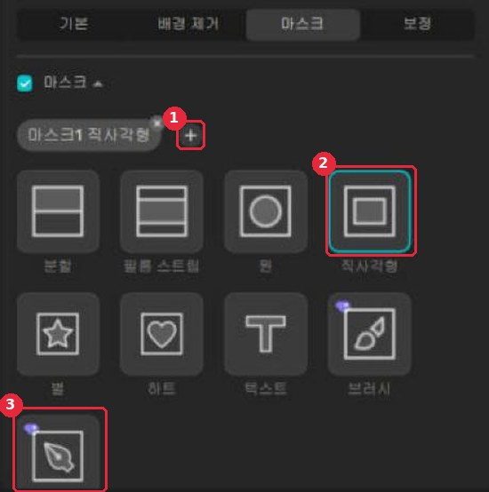
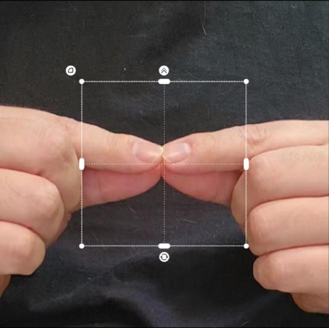


5효과 여러 개를 바꿔 가며 움직이기 실행 선택
- 실습 A를 끝까지 한 상태에서, 재생 헤드를 2초에 두고 위 클립만 선택 → Ctrl+B(분할)
- 4초에서도 한 번 더 분할 → 위 클립이 세 조각
- 조각마다 효과를 다르게: 둘째 조각은 효과를 지우고 채도 -50, 셋째 조각은 흐림
- 재생해서 창이 움직이는 동안 효과가 바뀌는지 확인
6펜 마스크로 손가락 모양 그대로 실행 💎 선택
- 위 클립 → 동영상 → 마스크 → 펜
- 손가락 끝 4곳에 점을 하나씩 찍어 닫기
- 마스크 설정 ◇로 키프레임 → 재생 헤드를 옮기고 점 위치를 다시 맞추기를 몇 프레임마다 반복

7실습 B · 창 안에 다른 영상 + 창 밖 흑백 실행 필수
- 새 프로젝트에 손 영상을 실습 A ①처럼 준비 (1:1 · 확대 185 · 13초에서 자르기)
- 뚜비(또는 내 영상)를 손 영상 위 트랙, 0초부터 끌어다 놓기
- 내 영상이 화면을 다 채우지 못하고 위아래에 검은 띠가 보이면 → 위 클립 동영상 → 기본 → 확대를 띠가 없어질 때까지 키우기 (가로 영상이면 180 정도)
- 위 클립에 직사각형 마스크 → 실습 A와 똑같이 키프레임으로 손가락 따라가기
- 아래 손 영상 선택 → 조정 → 기본 → 채도 막대를 끝까지 왼쪽 (-50)
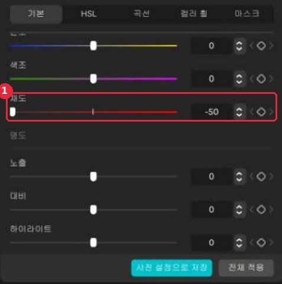
8한 걸음 더 선택
9막힐 때
| 이럴 때 | 이렇게 |
|---|---|
| 창이 손가락을 덮어요 | 틀을 손가락 끝 안쪽으로 줄이기 |
| 키프레임 사이에서 창이 어긋나요 | 어긋난 시점에 키프레임 하나 더 |
| 창 안팎이 똑같아 보여요 | 효과가 위 클립 위에 놓였는지 확인 (빈 트랙에 놓으면 전체에 걸림) |
| 창 안까지 흑백이에요 (실습 B) | 채도는 아래 손 영상만 |
| 내 영상이 안 보여요 | 내 영상이 위 트랙인지 확인 |
| 손 영상 둘레에 검은 띠가 있어요 | 비율 1:1 + 확대 185 |
| 내 영상 위아래에 검은 띠가 있어요 | 위 클립 확대 180 정도 |
| 펜을 누르니 결제 창이 떠요 | 💎 프로 기능 → 미리보기로만 써 보거나 직사각형으로 하기 |
| 값이 「-」로 보여요 | 클립이 여러 개 선택된 상태 → 빈 곳 누르고 클립 하나만 다시 선택 |
창을 펼쳐 다음 장면으로
손가락 창이 마지막에 화면 가득 펼쳐지면서 창 안 영상으로 넘어가요. 장면 전환 효과를 따로 넣지 않아도 마스크 키프레임 하나로 됩니다.
1완성 모습 설명
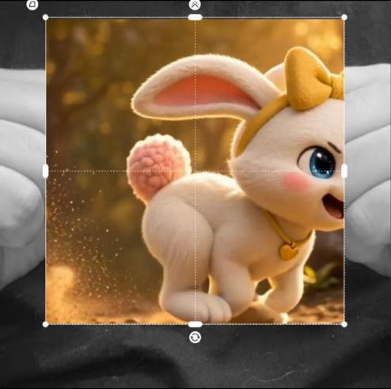
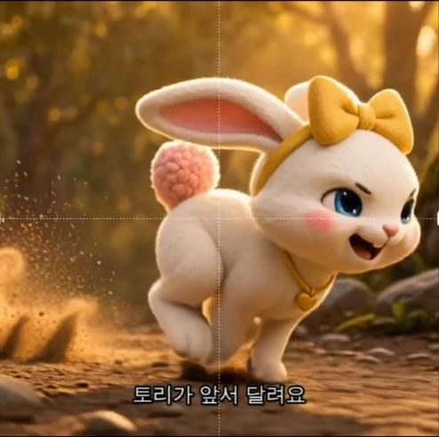
2따라 하기 ① 화면 가득 펼치기 실행 필수
- 재생 헤드를 마지막 키프레임 1~2초 뒤로 (강사 영상은 6초)
- 위 클립 선택 → 마스크 설정 위치 X 0, Y 0 · 크기 1100 × 1100 입력 → 키프레임이 저절로 생기며 창이 화면 가득
- 9:16 프로젝트라면 크기를 1100 × 2000처럼 화면보다 크게
- 손 영상은 여기서 끝나고, 그 뒤로는 창 안 영상만 이어져요
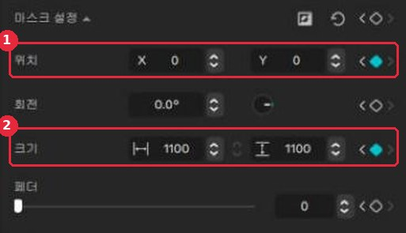
3따라 하기 ② 자막·음악·내보내기 실행 필수
- 위쪽 텍스트 → 기본 텍스트 → 펼쳐진 뒤 장면에 짧은 문구 한 줄
- 음악: 유튜브 오디오 보관함 또는 픽사베이에서 받아 가져오기 → 맨 아래 트랙
- 음악 끝은 페이드 아웃으로 자연스럽게
- 오른쪽 위 내보내기 → 제목에 작품 이름 → 해상도 1080p → 내보내기